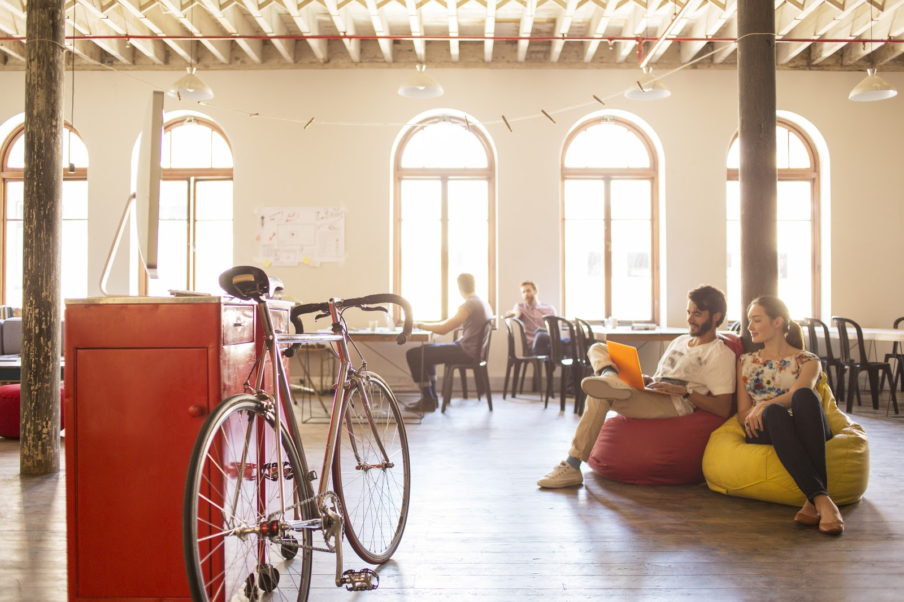

Read Connect, was founded in 2024 by two Teach For Kenya Cohort 4 Fellows (Erick Wambugu and Stacy Sirma) in response to the critical literacy challenges faced by students at Ngwata Primary and Junior School in Machakos County, Kenya.
Recognizing that many children struggle with basic reading skills, the initiative began with a focus on providing access to quality reading materials, play-based learning and digital literacy training methods.
Since its inception, Read Connect has actively engaged students through storybooks reading, peer tutoring, and interactive board games like Scrabble, chess and Monopoly. The project continues to evolve, with a strong commitment to empowering educators and fostering a supportive learning community, aiming to expand its reach to more schools and communities in the future.
